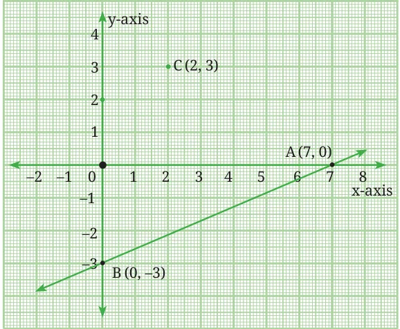

- Verify if the ordered pair (4, 3) is a solution of \(5x - 6y = 2\). Explain your reasoning.
- Find any two solutions for each of the following equations:
- \(7x - 3y = 21\)
- \(2x + 3y = 5\)
- In the equations given below, \(m\) and \(n\) are unknown constants: \(2mx + 3y = 7\); \(4x + ny = -10\). If (2, −1) is the solution of both equations, find the values of \(m\) and \(n\).
- Find two solutions which lie in different quadrants for each of the following linear equations. Identify the quadrants in which the points lie.
- \(5x + 3y = 7\)
- \(5x - 3y = 7\)
- \(-5x + 3y = 7\)
- \(-5x - 3y = 7\)
Verify your solutions by representing the linear equations on a graph paper.
- Consider the graph of the equation \(3x - 7y = 21\) shown below. Does the point C (2, 3) lie on the line? Does it satisfy the equation? Can points that do not lie on the line satisfy the equation?

- State whether the following sentences are True or False. Justify your answer.
- A linear equation in two variables has only one solution.
- The graph of a linear equation in two variables always passes through the origin.
- A linear equation in two variables can never have rational solutions.
- \(x = 3\) is a valid linear equation in two variables.
- The equation \(2x + 3y = 7\) has infinitely many solutions.
- The point (1, 2) is a solution of the equation \(2x + 3y = 7\).
- Compare the solutions of the equations \(3x + 4y = 7\) and \(6x + 8y = 14\). Argue that they have the same set of solutions, that is, every solution of one is also a solution of the other.
- Show that the equations \(ax + by = c\) and \(kax + kby = kc\), with \(k \ne 0\), have the same set of solutions.
Chapter 13 · Two Variables One Line